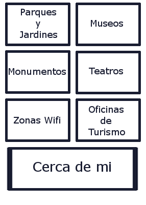
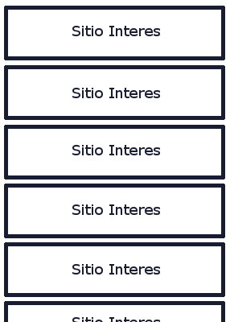

Application Requeriments
Descripción
Se trata de una aplicación mediante la cual los turistas de Madrid puedan tener todos los lugares de interés.
Requisitos
Permite saber dónde se encuentran los parques y jardines de Madrid, así como información sobre cada uno de ellos.
Permite saber dónde se encuentran los edificios de carácter monumental, así como información sobre cada uno de ellos.
Permite saber dónde se encuentran los museos, así como información sobre cada uno de ellos.
Permite saber dónde se encuentran las oficinas de turismo.
Permite saber dónde poder conectarse a una zona wifi.
Permite saber dónde se encuentran los teatros de Madrid.
Mediante la geolocalización permite saber que lugares de interés se encuentran cerca.
Página principal:

Página sitios interés:
